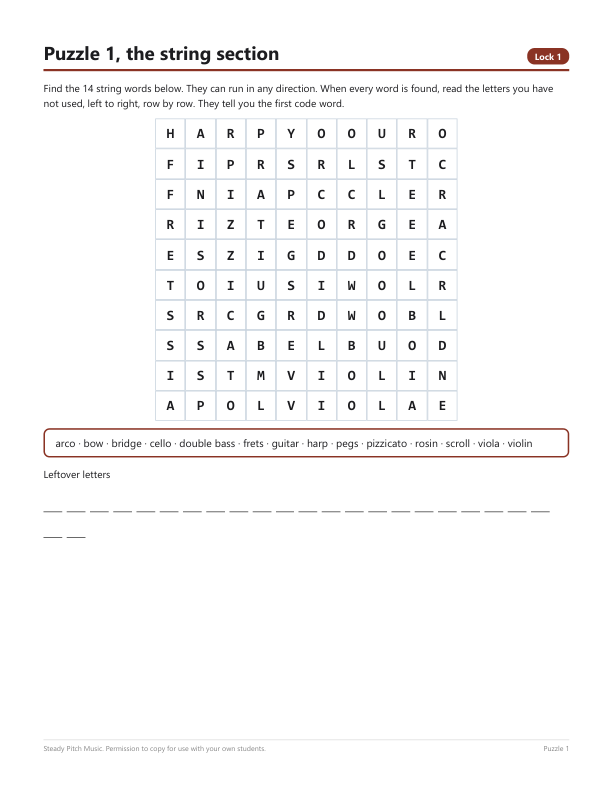
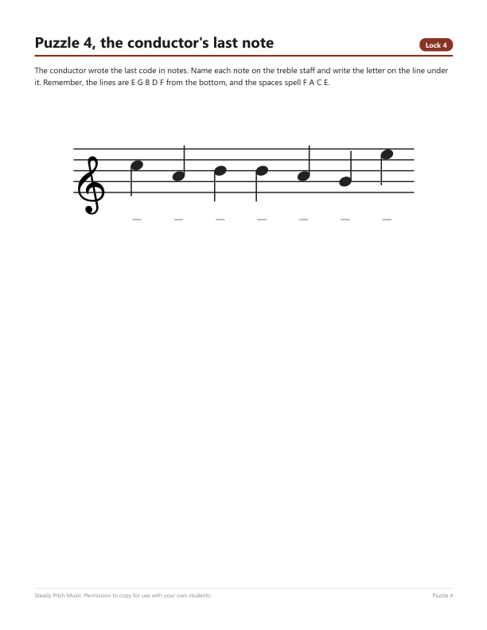
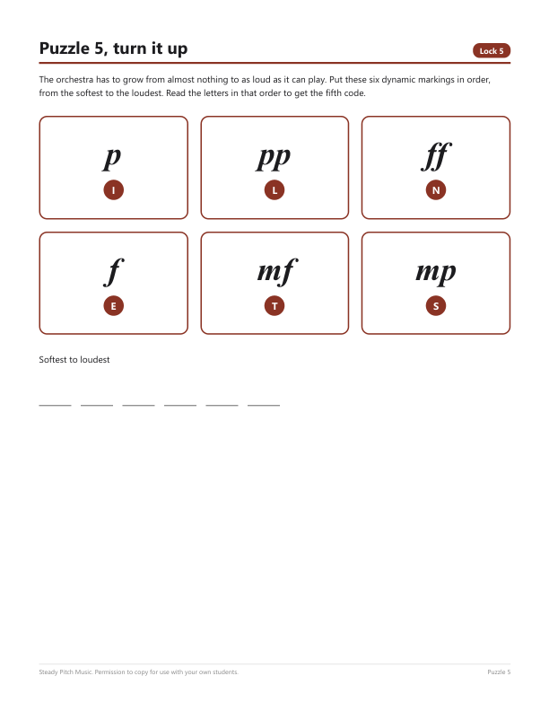
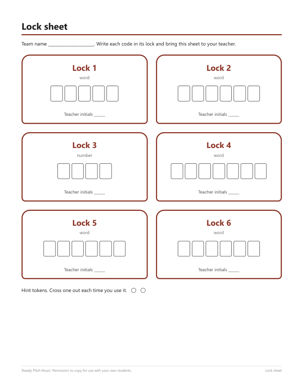

A music escape room on paper
The spring concert starts in forty minutes and the conductor has locked the score in the music cabinet. Six locks, six puzzles. Teams of three or four work through them in any order, bring you a code, and you initial the lock. First team with six initials gets the concert back.
Try one puzzle now, free
This is puzzle 5 from the pack, exactly as the students get it. Put the six dynamic markings in order from the softest to the loudest, and read the letters in that order.
Answer
pp, p, mp, mf, f, ff gives L, I, S, T, E, N. The code is LISTEN.
Print this page and the cards come out on their own, which makes it a five-minute opener even if you never buy the rest.
The other five puzzles
- A string section word search. Once every word is found, the letters left over spell the first code word.
- A brass crossword. Some squares are circled, and their letters unscramble into the second code.
- Twelve instruments to sort into strings, woodwinds, brass and percussion. The count in each family is the third code.
- A word written in notes on the treble staff. Name the notes and you have the fourth code. A hint card with every note name is included for teams that get stuck.
- Six tempo markings, Largo to Presto, to put in order from slowest to fastest.




Why paper
A lot of digital escape rooms run on Google Forms. That is fine until the cart of laptops is booked, or the person running the room is a substitute who has never seen the class. This one needs a photocopier and nothing else. No boxes, no real locks to buy, no devices. The teacher key gives every answer, so nobody has to read music to check a code.
Every grid was generated and then read back by a separate check before the file was made. Each word sits in the search exactly once, the hidden message reads correctly, and every circled letter in the crossword is the one the key says it is.
Same vocabulary, other formats
The words and definitions in the escape room come from the same sixteen topics as the music word searches, which have a free sample, and the crosswords and bingo games. A class can meet the words in a puzzle one week and in the escape room the next.